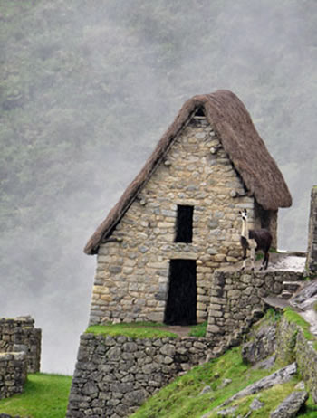

Our next trip to Peru has now been scheduled, with a departure date of May 5 and a return date of May 15. This deluxe tour begins and ends in Lima. Come join us and enjoy some of Peru's greatest treasures. Lima is a UNESCO World Heritage Site with a multitude of historic architecture and museums. After two days in Lima, we will travel to Cusco. Here we will visit the Cathedral, a blend of Gothic, Renaissance, and Baroque styles. We will take a short drive to the Incan ruins of Sacsaythuaman, a great fortress where the Spanish and Incas fought in battle.
Magnificent Machu Picchu is next, the highlight of our trip. We will travel by train along the Urubamba (Sacred Valley) River and arrive at Machu Picchu in the early afternoon. We will be staying at the Machu Picchu Sanctuary Lodge, which will allow us to visit the ruins in the late afternoon and again early the next morning. Machu Picchu is called the "Lost City" as it was unknown to all but local farmers until 1911, when it was explored by archaeologist Hiram Bingham. At this locale's high altitude, you will find your heads literally in the clouds! This dramatic photo of Machu Picchu shows the ruins rising from the clouds.
To provide the finest in personal attention, this tour will be limited to no more than sixteen persons. The price schedule is as follows: Land Tour and Supplemental Group Air, $6,500.00; International Air, $1,350.00; and Single Supplement, $1,000.00. Entrance fees, hotel taxes, and services are included in the Land Tour price. A deposit of $500.00 is required at the time of booking. Trip insurance and luggage insurance are optional and are also offered for an extra charge. A passport will be required for entry into Peru. Call us at 555-848-0807 for further information and the complete itinerary from 8:00 a.m. to 6:00 p.m. (Central Standard Time).